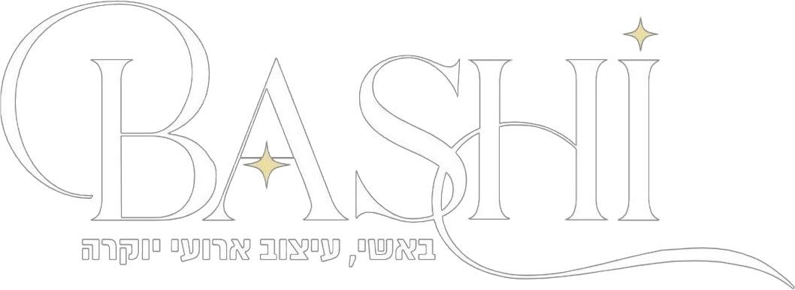
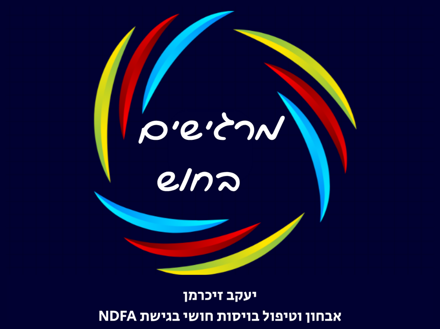
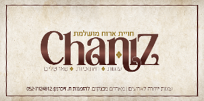
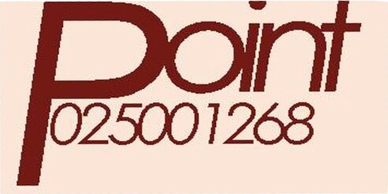

בס״ד
דינר שש שנים · תשפ״ז
שש שנים של נתינה
המוטו שלנו״מיר זענען אלע א חלק
פון די שמחה״
עוד ישמע בערי יהודה ובחוצות ירושלים
קול ששון וקול שמחה קול חתן וקול כלה
15חתונות
150,000₪ חולקו לשמחות
6שנים של נתינה
המוטו שלנו״מיר זענען אלע א חלק
פון די שמחה״
עוד ישמע בערי יהודה ובחוצות ירושלים
קול ששון וקול שמחה קול חתן וקול כלה
מוצ״ש לך לך · לסדר ״איש את רעהו יעזורו ולאחיו יאמר חזק!״
אל אחי ורעי אשיחה נא דבר אשר עם לבבי, אדברה וירווח לי
מעשה בחסיד אחד אשר ידיו רב לו בכל מיני "עסקנות" של מצוה למיניהם, עסוק בצרכי ציבור ואוהב חסד, הולך הוא ברחובה של עיר בדרכו לעוד איזה צורך הרבים...
ולפתע עיניו החדות קולטות בקצה הרחוב אישה אחת הולכת לאיטה, עמוסה בחבילות ושקיות עד להתפקע, גונחת מכובד המשא ומתאמצת בדרכה על כל פסיעה...
והוא כאיש חסד בכל לבו ונפשו אשר לבו ער לכל הדורש עזרה, באינסטינקט של שני' מחליט שאין מעבירין על המצוות, העסקנות הציבורית עוד תסתדר איכשהו על ידי עוד כמה אוהבי חסד כמוהו...
אבל מי יעזור לענייה זו ברחובה של עיר? באבירות לב מסיט הוא את דרכו לכיוונה, שמח וטוב לב על המצווה שנפלה בחלקו כמעט מבלי משים.
כמעט שהתקרב אליה, והנה שומע הוא את קולה, קול מוכר עד למאוד, באמרה אליו: 'מה לך אישי היקר כי נחפזת היום לעזרני? מה יום מיומיים?...'
ויפלו פני החסיד דנן, בראותו כי נתמסמסה לו מצוותו הנכבדה מבין קשרי אצבעותיו, ויפטר אליה בשפה רפה: 'סלחי נא לי אשתי היקרה על שאין בי עתה זמן לעזרך, הן עסוק אני בצרכי ציבור, ומצוות גדולות וטורח הרבים עוברות על ידי, ואת, יהא ה' בעזרך שתצליחי להיסחב עם כל חבילותייך...'
ברוך ה' נתברכנו בקהילתנו הקדושה והמעטירה, בכל מיני מצוות גדולות וארגונים נכבדים הפועלים גדולות ונצורות. האחת תומכת בנזקקים ומעמידם על רגליהם, ומביאה רווחה לכלל אנשי שלומנו, השני' בונה בניינים ותומכת באברכים וישיבות, ממש עמוד התורה! חברתה מעלה נשמות מבאר שחת ומקרבת אלפים ליראת ה', עוד ארגון עוזר דלים והשני סומך נופלים, אחת לחתונות ואחת לבר מצוות וכו' וכו'...
ולא עוד אלא, שכל אחת מוכרת מרכולתה: לאחת יש מכתב ברור מכ"ק מר"ש, ולחברתה זוהר בפר' תרומה, לזאת יש את מכתב הרבנים ולאחרת את כל ספרי הצדיקים.
ולא עוד אלא שבזכות כל אלו הקופות, יש לנו שטר זכאי ודבש לר"ה ונר החיים ליו"כ, הושענות לסוכות ומצות לליל הסדר, שמן זית לחנוכה והמן טאשן לפורים, הזכרות בכל קברי רבותינו וקוויטלעך בכל עת רצון, בער"ח ועריו"כ, בזאת חנוכה ובשושן פורים. ברוך ה', תודה לקל...
ולא עוד אלא שלכל ארגון וחבורה קדושה יש לה את ה"מגבית" הגדולה ואת ה"אסטרטגיה" המפואר, אשר בתבונות כפיו ינחם איך להרבות פעלים לתורה ולצדקה.
ותמהין ושיילין ליה: הלזאת צדקה יקרא?! איזה בנין בניתם? או שמא חילצתם נפש משאול? ואולי העמדתם כמה משפחות על דרך המלך? איזה סגולה יש לכם להציע? ואיזו שם הבנין יש באמתחתכם? כלום יש לכם יין לד' כוסות או ערבה לד' מינים? כלום יש לכם ברכת הקודש ממרן המחנ"ח זי"ע, או שמא ואולי הזכרה על ציונו של הסמיכת חכמים? והלא אפי' שם ולוגו לקמפיין אין, והאיך אפשר לצאת ידי חובת צדקה באופן כזה?...
אף אנו נשיב ונאמר לו, כי יש לנו ברכת התורה, כמש"כ בספר תורת משה הנתונה למשה רבינו מפי הגבורה בערבות מואב, ושם נאמר: כי יהי' בך אביון מאחד אחיך וגו', ודרשו רבותינו: אחיך קודם לכל אדם. ובהמשך הפרשה: נתן תתן לו וגו', כי בגלל הדבר הזה יברכך ה' אלוקיך בכל מעשיך ובכל משלח ידך.
ושנוי בנביאים: הלא פרוס לרעב לחמך וגו', ומבשרך אל תתעלם. אז יבקע כשחר אורך וארכתך מהרה תצמח, והלך לפניך צדקך כבוד ה' יאספך. אז תקרא וה' יענה, תשוע ויאמר הנני, אם תסיר מתוכך מוטה וגו'.
לפני שש שנים בדיוק התכנסה המשפחה סביב שולחן אחד וייסדה את קופת ״עוד ישמע״, כדי שאף מחותן במשפחה לא יעמוד לבד מול החופה. בלי עשירים גדולים ובלי קרנות: כל בית בהוראת קבע לפי יכולתו, שקל אחר שקל.
מה היעד?
לפחות 4,000 ₪ בחודשנוספים לקופה, בתוספת לקיים
וביחד נשבור שיאים חדשים!

052-766-2628


על הלב, הנשמה והמימון הנדיב, שבזכותם נראה הערב כפי שהוא נראה